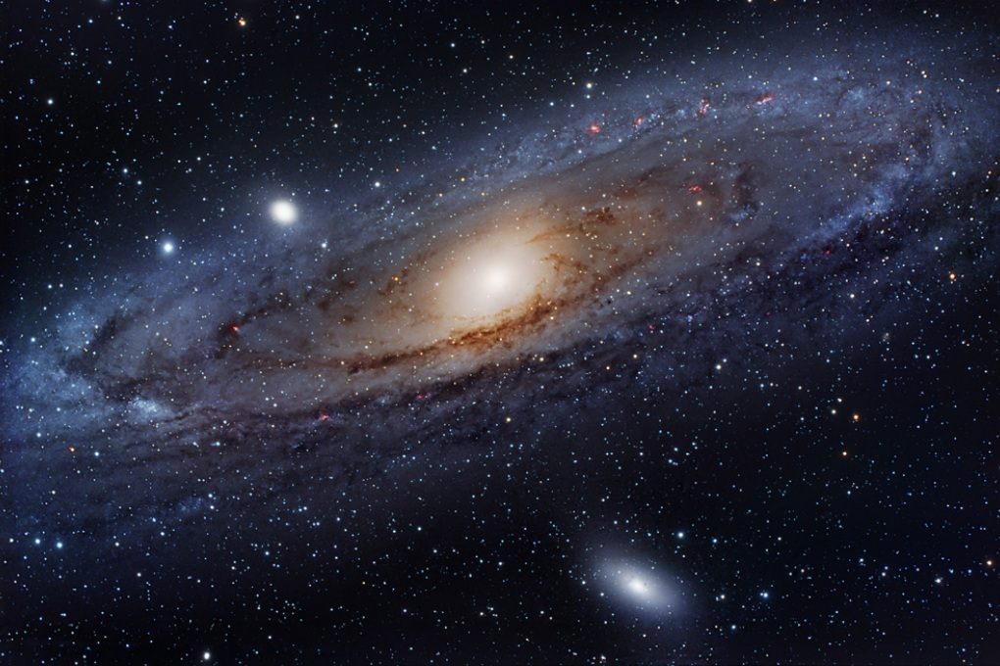

Senza Essere Viste

storie di scoperte che hanno rivoluzionato il mondo… e di scienziate che spesso non hanno ricevuto il riconoscimento che meritavano.
È fatta di domande difficili, intuizioni, errori… e persone.
Questo progetto racconta il lavoro di cinque scienziate che hanno trasformato il nostro modo di capire la realtà:
studiano sistemi dinamici invisibili
Ci mostrano che il mondo non è statico, ma in continuo cambiamento.
Ma le loro autrici sono state spesso ignorate, sottovalutate o escluse.
Questo sito non è solo un progetto scientifico.
È anche un modo per dare visibilità a chi ha contribuito a costruire la conoscenza… senza essere sempre riconosciuto.